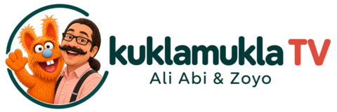

İçeriğe geç
Türkiye’nin 81 ilinde kukla gösterisi
Instagram’da bize ulaşın

Menü
Ali Abi & Zoyo
Gösteriler
Kukla gösterisi
Okullar için
Belediyeler için
23 Nisan & özel günler
Çocuklar için kukla tiyatrosu
Videolar
Fotoğraflar
81 ilde gösteri
Instagram’dan mesaj atın
(yeni sekme)
Ana sayfa
Sayfa bulunamadi
SAYFA BULUNAMADI
Bu sahne henüz kurulmamış.
Aradığınız sayfa taşınmış veya bağlantı yanlış yazılmış olabilir.
Ana sayfaya dönün
Gösterilerden bir kare